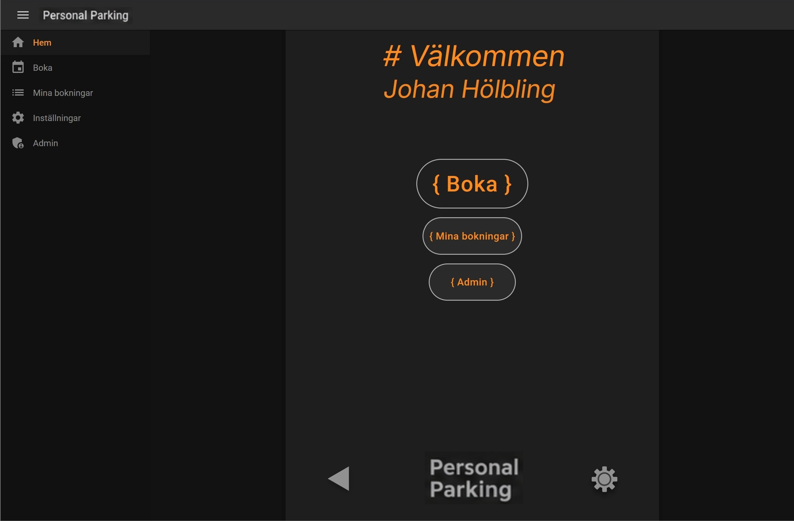
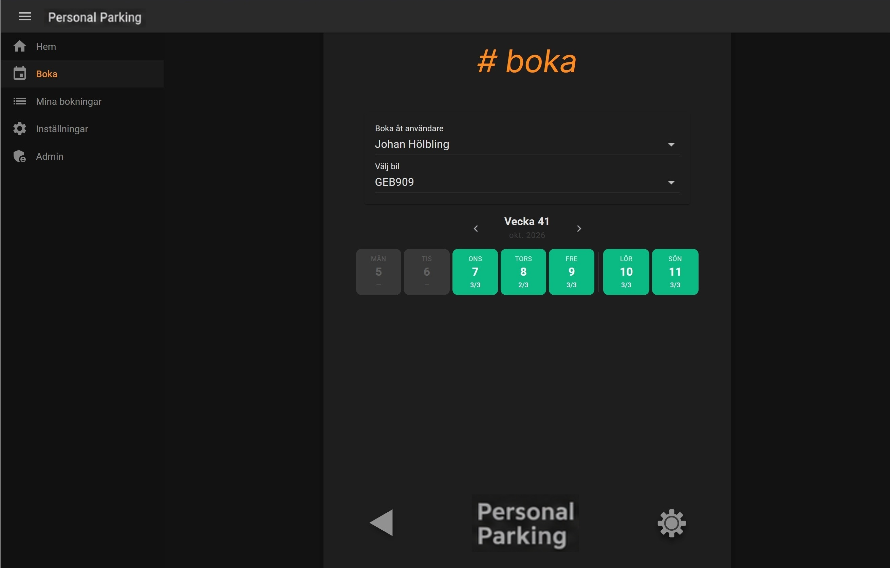
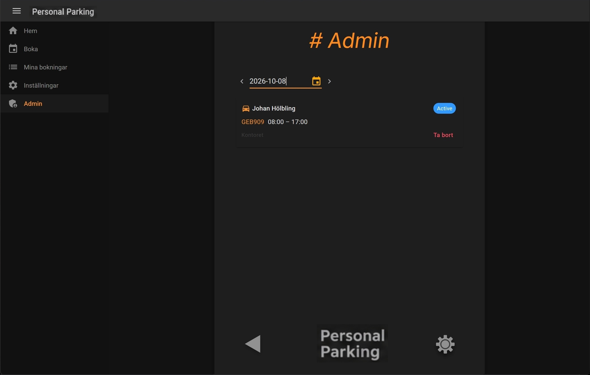
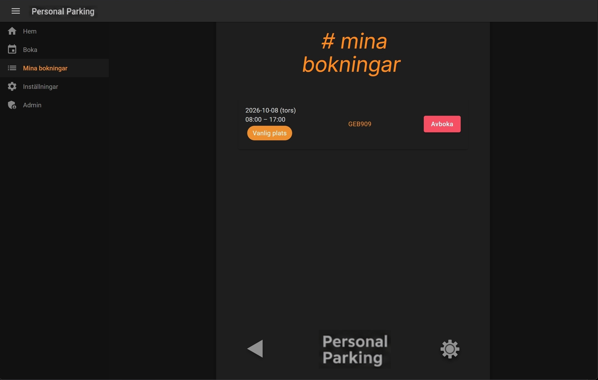
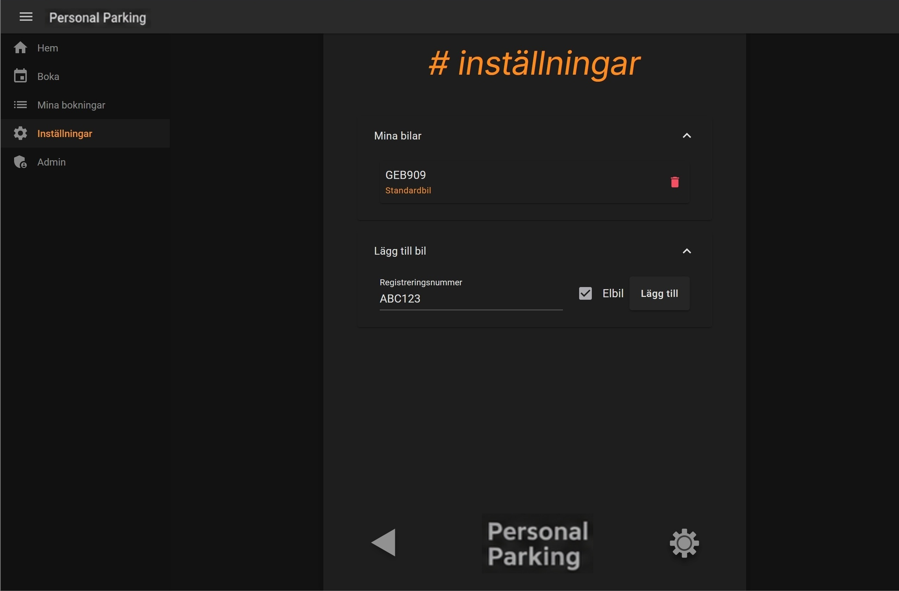

Boka parkering
Användaren kan välja datum, fordon och tillgänglig parkeringsplats och skapa en bokning.
Ett webbaserat system för att hantera och boka parkeringsplatser. Projektet utvecklades under min LIA med fokus på användarvänlighet, tydlig struktur och en lösning som kan byggas ut med fler parkeringsplatser och funktioner.
Målet med projektet var att skapa ett enkelt och tydligt sätt för användare att se tillgängliga parkeringsplatser, välja datum och göra bokningar. Systemet innehåller även funktioner för att hantera fordon och administrera bokningar.
Jag arbetade med både frontend och backend och använde Blazor för gränssnittet samt Entity Framework Core för kommunikationen med databasen. Projektet byggdes med en strukturerad arkitektur där ansvar delas mellan olika delar av applikationen.
Användaren kan välja datum, fordon och tillgänglig parkeringsplats och skapa en bokning.
En tydlig kalenderliknande vy gör det enkelt att se tillgänglighet under veckan.
Användaren kan se sina aktuella bokningar och avboka parkeringar när det behövs.
Användaren kan lägga till och hantera sina fordon och ange information som används vid bokning.
Administratören kan se bokningar för ett valt datum och hantera bokningar från administrationsvyn.
Administrativa funktioner skyddas så att endast administratörer får tillgång till dem.
Projektet är utvecklat i .NET med Blazor Server och MudBlazor. Databasen hanteras med Entity Framework Core och SQL Server. Jag använde även Clean Code-principer och separerade bland annat dataåtkomst, infrastruktur, applikationslogik och webbgränssnitt för att hålla projektet strukturerat och lättare att underhålla.
Några vyer från applikationen.





Under projektet arbetade jag med både gränssnitt och backendlogik. Det innebar bland annat att bygga Blazor-komponenter, implementera bokningslogik, arbeta med databasen via Entity Framework Core och skapa administrativa funktioner.
Projektet gav mig praktisk erfarenhet av att ta krav och användarbehov och omsätta dem till fungerande tekniska lösningar.